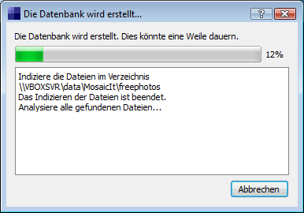

Diese kurze Einführung zeigt die notwendigen Schritte, um ein
Fotomosaik zu erstellen. Detailliertere Informationen gibt es auf den
entsprechenden Hilfeseiten.
Bevor Sie ein Fotomosaik erstellen können, müssen Sie eine
Bilderdatenbank einrichten, die alle zu für das Mosaik zu
benutzenden Bilder enthält.
Starten Sie das Programm, z.B. durch Wählen des entsprechenden Eintrags im Startmenü.
Klicken Sie dann im Hauptfenster auf "Datenbank erstellen".
Wählen Sie im folgenden Dialog einen Dateinamen für die neue Datenbankdatei.
Wählen Sie außerdem ein Verzeichnis, das die Bilder enthält, aus denen das Mosaik erstellt werden wird.
Beachten Sie, dass das Ergebnis desto besser sein wird, je mehr Bilder in der Datenbank sind.
Weitere Verzeichnisse oder Dateien können Sie später im "Datenbank bearbeiten"Dialog
hinzufügen. Wenn Sie auch die Bilder in den Unterverzeichnissen
zur Datenbank hinzufügen wollen,
wählen Sie die "Unterverzeichnisse einschliessen"-Option.
Bestätigen Sie die Angaben mit der "Datenbank
erstellen"-Schaltfläche,
um die Bilder im gewählten Verzeichnis zu analysieren und danach
die Datenbankdatei zu speichern.
Haben Sie nun etwas Geduld, während die Datenbank
erstellt wird. Abhängig von der Anzahl der Bilder im
gewählten Verzeichnis wird dies einige Zeit benötigen. Das
Abbrechen dieses Schrittes wird zu einer unvollständigen Datenbank
führen.

Wenn Sie einen ähnlichen Dialog sehen, wurde die Datenbank erfolgreich gespeichert und steht nun zur Benutzung bereit.
Klicken Sie auf "Schließen" und erstellen ein Fotomasaik!
Um weiter Informationen darüber, was beim Erstellen einer Datenbank zu beachten ist, lesen Sie das Kapitel "3.1 Erstellen einer Bilderdatenbank".
Jetzt können wir die eben erstellte Bilderdatenbank zum Erstellen eines neuen Fotomosaiks verwenden.
Wählen Sie dazu die "Neues Mosaik"-Schaltfläche im Hauptfenster.
Im folgenden Dialog müssen Sie die Grundeinstellungen für das neue Mosaik festlegen.
Geben Sie im "Datenbank"-Feld die soeben erstellte Bilderdatenbank an.
Wählen Sie im "Ursprungsbild"-Feld das Bild, auf dessen Grundlage Sie ein Fotomosaik erstellen wollen, aus.
Geben Sie im Feld "Mosaikdatei" den Dateinamen, unter dem das zu erstellende Mosaik gespeichert werden soll, an.
Drücken Sie zum Abschluss die "Weiter"-Schaltfläche.
Jetzt müssen Sie
die genauen Einstellungen für das neue Fotomosaik wählen. Ich
empfehle, die Optionen zu Beginn ähnlich denen im Screenshot
rechts zu wählen.
Zuerst die Kachelgröße. Das Mosaik wird aus vielen kleinen
Kacheln erstellt werden, jede wird die Größe (in Pixeln)
haben, die Sie hier festlegen.
Darunter können Sie das Seitenverhältnis der Kacheln angeben;
Wählen Sie den Wert, der dem der meisten Einträge in der
Bilderdatenbank entspricht. Wenn die Bilder in der Datenbank
unterschiedliche Seitenverhältnisse haben, ist 1:1 meist eine gute
Wahl.
Die nächste Option legt fest, wie die Kacheln, die nicht dem oben
festgelegten Seitenverhältnis entsprechen, angepasst werden; Sie
können entweder die Ränder abschneiden oder sie skalieren.
Legen Sie dann die Anzahl der Kacheln im Mosaik insgesamt fest; Je
höher der gewählte Wert ist, desto besser wird das Ergebnis
sein, desto höher wird allerdings auch der Speicherverbrauch beim
Rendern des Mosaiks und desto länger die dafür benötigte
Zeit sein.

Die Option "Minimaler Abstand zwischen den selben Kacheln"
lässt Sie festlegen, welcher Abstand mindestens zwischen dem
Verwenden derselben Kachel im Mosaik liegen muss.
Nun können Sie festlegen, wie oft die selbe Kachel maximal im Mosaik auftauchen darf.
Sie können auch einen Wert für den Alphakanal
wählen, mit dem das fertige Mosaik mit dem Ursprungsbild
überblendet wird - dies beeinflusst vor allem die Grundfarbe der
einzelnen Kacheln für ein realistischeres Ergebnis. Wählen
Sie "0", um die Option abzuschalten; "1" bedeutet maximale, "99"
minimale Transparenz. Ich empfehle einen Wert von 30 oder 33.
Abschließend wird die Größe des resultierenden
Mosaiks angezeigt. Dies gibt Ihnen einen Hinweis auf den zu erwartenden
Speicherverbrauch und die Zeit, die zum Erstellen benötigt wird.
Ein Mosaik mit 60 Megapixeln wird während des Erstellens etwa
300MB Arbeitsspeicher benötigen. Das Rendern wird auf einem etwas
älteren AMD Athlon XP mobile 2600+ etwa 10-15 Minuten dauern.
Wenn Sie alle Einstellungen getätigt haben, drücken Sie auf "Rendern".
Haben Sie nun etwas Geduld, während das Mosaik erstellt
wird. Abhängig von den gewählten Einstellungen und der
Geschwindigkeit Ihres Rechners könnte das eine Weile dauern.
Wenn Sie einen Dialog ähnlich dem folgenden sehen, wurde das Mosaik erfolgreich erstellt!
Sollte das Erstellen fehlschlagen, finden Sie unter "5.1 Das Rendern des Mosaiks schlägt fehl" weitere Informationen.
Merken Sie sich den Dateinamen des Mosaiks und drücken Sie die "Schließen"-Schaltfläche.
Weiter Informationen darüber, was beim Erstellen eines Mosaiks zu beachten ist, finden Sie unter "4. Erstellen eines Fotomosaiks".